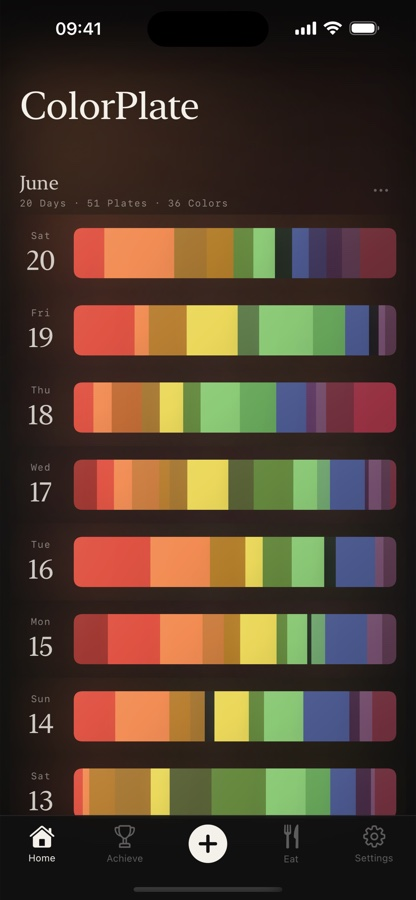
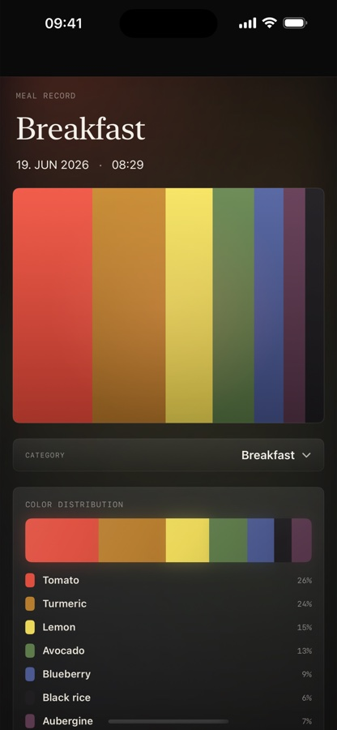
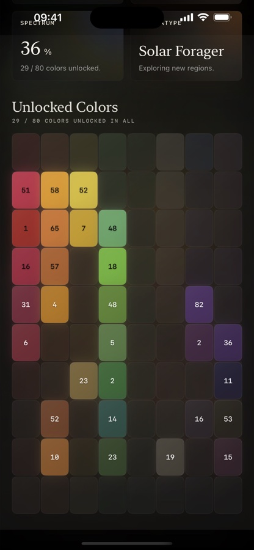
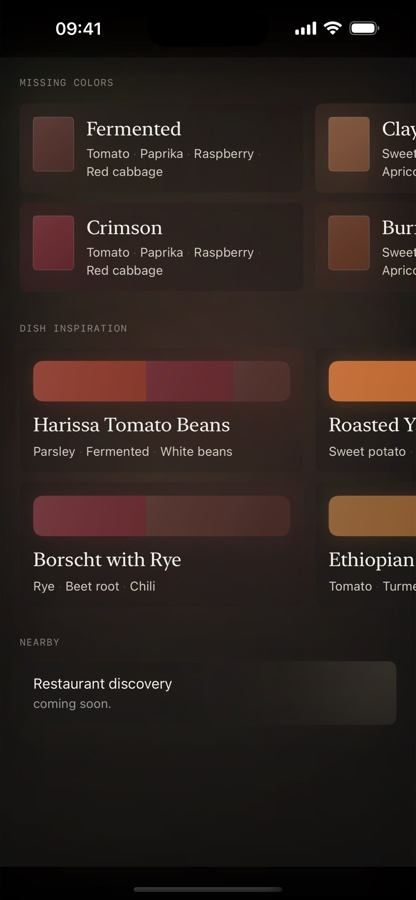

颜色变成记忆。
一份餐盘会被读成可食用色彩、食材信息，以及加入档案的色彩丝带。
- 番茄30%
- 姜黄24%
- 柠檬18%
- 牛油果13%
- 蓝莓9%
- 黑米6%

概念
大多数食物记录工具计算热量。食色录记住颜色。

一份餐盘会被读成可食用色彩、食材信息，以及加入档案的色彩丝带。
色谱
彩虹分数、连续记录、已解锁色彩和饮食色型，会把档案变成一幅安静的可食用色彩肖像。

饮食
食色录帮助你通过食材和菜品探索少吃的颜色，而不是围绕节食或体重做判断。

App Store 信息
无需账号。餐食照片用于生成分析和档案。位置权限是可选的，只会在附近食物发现功能中使用。
部分分析可能使用安全的第三方 AI 提供方。用户选择照片进行食材和色彩分析时，会明确知道照片正在被处理。
食色录是一款可视化食物档案工具，不是医疗设备，也不提供诊断、治疗、饮食处方或临床建议。
你可以在网站和 App 设置中找到支持、隐私请求和法律联系入口。